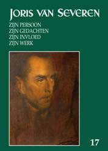

We hebben ook in ons
land dus nog een lange weg te gaan.
We hebben ook in ons
land dus nog een lange weg te gaan.
> nieuwsbrief > 2013 - nr 3
Inhoud
Hernieuwen
ledenbijdrage voor 2013
Hoewel
we,
zoals elk jaar overigens, weer geconfronteerd werden met de – uiteraard
weer
eens naar boven – aangepaste posttarieven, blijft uw ledenbijdrage voor
2013
ongewijzigd. Ze beloopt voor het in mei al verschijnen nieuwe Jaarboek Joris van Severen en
voor de driemaandelijkse Nieuwsbrief
Joris van Severen 29 €. Vanaf 35 € wordt u met dank als steunend
lid
geboekt. Bijliggend betaalformulier wil de “achterstalligen” er aan
herinneren
dat ze totnogtoe “in gebreke” bleven met het vereffenen van hun
bijdrage. Van
zodra we deze kunnen boeken wordt het nieuwe jaarboek hen toegestuurd.
Voor tal
van
geadresseerden vormt deze Nieuwsbrief wellicht
een eerste kennismaking met het Studiecentrum Joris van Severen en zijn
werking. We verhopen, mede met het oog op onze verdere plannen – zoals
de voor
2014 geplande prestige-uitgave van de grote fotobiografie over Joris
van
Severen en zijn beweging – hun belangstelling te kunnen opwekken.
Alfons van Opstal
Aandachtige lezers zullen het al vastgesteld hebben: in deze jaargang brengen we nog enkele – de laatste - afleveringen van Fons herinneringen aan zijn Dinaso-tijd.
Ook in het jongste nummer van de Mededelingen van het tweemaandelijkse tijdschrift van de Vereniging van Vlaams-nationale Auteurs – 37e jg., nr. 2/2013 – werd aan Fons aandacht besteed over niet minder dan 4 pagina’s. Naast een beknopt CV lezen we daar ook een van zijn bijdragen van destijds in onze Nieuwsbrief Joris van Severen, naar aanleiding van de Abbeville-bedevaart.
De reactie van het
tijdschrift was
zo attent te verwijzen naar onze webpagina’s www.jorisvanseveren.org –
waar alle
ooit verschenen num-mers van onze Nieuwsbrief
Joris van Severen na te lezen zijn.
Voor het jaar 2014
plannen wij binnen
het Studiecentrum Joris van Severen andermaal een jaarboek buiten
reeks.
De voorstelling van deze uitgave zal kaderen binnen een Colloquium Joris van Severen dat in de oktobermaand van 2014 te Wakken zal doorgaan.
In onze Nieuwsbrief zullen we regelmatig op dit grootse project terugkomen, teneinde u tijdig te informeren over de stand van zaken. Deze publicatie buiten reeks, zal tevens als ons jaarboek voor 2014 fungeren.
Zaterdagmiddag, 23 februari, hadden we
met een beperkte
groep vergadering in de abdij van Zevenkerken. Aanwezig waren onder
meer
drukker Robert Timperman, de gebroeders Luc en
Bron: blogspot
Ook in deze jaarboekaflevering komt Joris van Severen andermaal zelf aan het woord. Na in 2009 zijn dagboeknotities van 12 november tot einde 1918 (zijn oorlogsdagboek Die vervloekte oorlog eindigde met de Wapenstilstand op 11 november 1918) en in 2010 zijn dagboek over 1919 integraal gepubliceerd te hebben, vervolgen we – na vorig jaar de eerst vier maanden van 1920 gebracht te hebben – met de maanden mei-september van dat jaar.
Ook uit deze dagboekbladzijden blijkt weer hoezeer Van Severen de toenmalige actualiteit opvolgde – en zich grondig kon ergeren aan de mediocriteit van zijn medestrijders binnen de Vlaamse Beweging.
Op 11 juli 1920 werd Herman van den Reeck te Antwerpen neergeschoten; op 17 juli volgde de begrafenis in aanwezigheid van Joris van Severen.
Van 20 tot 26 september trekt hij een kleine week doorheen Nederland. Niet in de eerste plaats vanuit een ‘Dietse’ bezieling, maar veeleer om oude bekenden – Karel de Schaepdrijver, Jules Charpentier, Alfons Depla, Leo Meert, e.a. – op te zoeken. De enen had hij gekend binnen de Frontbeweging, de anderen waren bannelingen omwille van hun rol in het Activisme.In dit stadium nog geen Dietse droom dus. Integendeel zelfs, want bij zijn thuiskomst noteert hij: “Holland staat me niet aan. ‘k Voel me er niet thuis…”.Maar ook zijn getormenteerde liefdesrelatie met Germaine Duccobu blijft hem parten spelen. Wat hem overigens niet belet, tussen vlagen van zelf-kwelling door, nieuwe relaties aan te gaan.
Romain Vanlandschoots jaarboekbijdragen kunnen met steeds meer recht beschouwd worden als even zoveel luiken van wat terecht als “een verfijnde biografie” mag omschreven worden over de cruciale jaren waarbinnen Van Severens omslag “van links naar rechts” zich voltrok. In zijn vervolgluik over het jaar 1924, met als titel De eerste grote synthese, richt de auteur de schijnwerpers daarbij evenzeer op de West-Vlaamse voorman binnen de toenmalige Vlaamse beweging, die Van Severen toen onmiskenbaar was. Maar vooral de diepgaande ontleding van Van Severens essay ‘Vlaams Nationalisme’ wekt andermaal bewondering voor de acribie waarmee de auteur zijn stof beheerst. Met “Wij willen een principiële politiek voeren” voegt de auteur daarmee andermaal een diepgravend hoofdstuk toe aan zijn verfijnde biografie.
In het daaropvolgend
essay van dit zeventiende
jaarboek speurt
Deze jaarboekaflevering sluit uitzonderlijk niet af met een gedicht, maar wel met niet minder poëtische haiku’s van Herwig Verleyen.
Tot zover een inhoudsoverzicht van ons 17e jaarboek.
_________________
Dit 17e jaarboek
verscheen
reeds in de loop van de voorbije meimaand.
__________________
Noot: alvast in’t Pallieterke van 5 juni 2013 lazen we een voortreffelijke recensie van de hand van de Brave Hendrik. Ze bezorgde ons tal van nieuwe lezers, die we met deze Nieuwsbrief welkom heten
Getrouw aan de
stilaan gegroeide traditie telt de omstreeks 20 mei
gehouden herdenking een drietal luiken. Vooreerst is er nabij de
voormalige
woning van Joris van Severen het door het Brugse Abbeville
Comité ingerichte
bezinningsmoment ter herinnering vaan
de vier Bruggelingen die op 20 mei 1940 het leven lieten aan de kiosk
te
Abbeville. Een gedenkplaat met de vier namen in de Wollestraat
herinnert daar
permanent aan. Daar voerden, naast een afgevaardigde van het Brugse
gemeentebestuur, o.m. Jean Marie Bogaert en
In de namiddag ging in de kapel van het Slot van Male de jaarlijkse herdenkingsmis door opgedragen door de E.H. Roeland Vansteenkiste, wiens homilie u hieronder leest. Naderhand vonden de aanwezigen elkaar terug in het nabije Hof van Male voor de traditioneel geworden receptie, waarop Annie Tanghe enkele aan Joris van Severen opgedragen gedichten voordroeg.
Net als de
plechtigheid op zondag aan de graven van Joris van Severen en
Onder de vier
Brugse slachtoffers van het bloedbad van 20 mei 1940, werd
er dit jaar meer specifiek aandacht besteed aan leven en werk van Jan
Ryckoort.
Diens kleindochter
Toespraak namens het Abbeville Comité
Jean-Marie
Bogaert, Ere-schepen stad Brugge
De
met bloemen getooide
gedenkplaat in de Brugse Wollestraat
Mevrouw Gaby Warris,
Mevrouw
We zijn aan het einde
van een
sobere maar o zo zinvolle plechtigheid. De herdenking van de 4 Brugse
slachtoffers van het bloedbad van Abbeville, bloedbad dat uiteindelijk
het
leven zou kosten aan 21 mensen. Slachtoffers van soms toevallige, vaak
willekeurige aanhoudingen, op 10 mei 1940 bij het uitbreken van de
oorlog,
slachtoffers van een willekeurige executie door Franse soldaten tien
dagen
later op 20 mei 1940.4 Brugse
slachtoffers:
Louis Caestecker, loodgieter en communist.
Maria Ceuterick, schoonmoeder van - en samen met haar dochter en haar kleindochter opgepakt in de plaats van de afwezige Ernst Warris, Nederlandse architect en protestant in het katholieke Brugge.
Joris van Severen, nochtans ijverend voor een hereniging van de Benelux-landen waarbij hij ook een rol zag voor een royalistisch België.
En
Beiden stonden wel nog op een hopeloos verouderde lijst van de Staatsveiligheid...
Soms vraag ik mij vertwijfeld af of de tijden, nu 73 jaar later, wel écht veranderd zijn. We herinneren ons de RTBF-verslaggeving nog maar twee jaar terug. De verslaggeefster van dienst noemde onze herdenking - en ik citeer: “een heropleving van extreem rechts in Vlaanderen, Vlaanderen dat nog steeds banden onderhoudt met het verleden en er hulde aan brengt zelfs al behoort een extreem rechts flamingant onder de slachtoffers.” Einde citaat.
Onwetendheid en blinde vooringenomenheid liggen ongetwijfeld aan de basis van deze foutieve maar ook gevaarlijke voorstelling van feiten. Terwijl we inmiddels toch ook uit degelijk historisch onderzoek weten dat er op het ogenblik van hun aanhouding geen enkele smet rustte op de vier Brugse slachtoffers van het bloedbad van Abbeville.
We hebben ook in ons
land dus nog een lange weg te gaan.
Homilie Herdenkingsmis in het Slot van Male
E.H.
Roeland
Vansteenkiste
“Ze werden allen vervuld van de heilige Geest en zij
begonnen te spreken
in vreemde talen…” Zo verhaalt Lucas in de Handelingen van de apostelen
over
het wonder van Pinksteren. Als we het hebben over een vreemde taal
denken we
aan een taal die niet de onze is.
Veronderstel dat hier iemand in deze abdijkerk zit die
nog nooit met het
geloof in aanraking is gekomen. Ik denk dat hij zal zeggen: er wordt
hier een
vreemde taal gesproken.
Wie niet gelooft, wie het contact met het geloof kwijt is
geraakt,
verstaat niet de helft van wat hier gezegd wordt. In ons geval komt er
nog een
taal van een gans andere orde bij.
Wie hier vandaag aanwezig zou zijn, zonder de minste
vermoedens waarom
en voor wie wij hier piëteitsvol samenzijn, zou zeker en vast niets
begrijpen
van wat hier gezegd wordt.
Wie kent Joris van Severen nog? Wie weet waarvoor hij
geleefd en
geijverd heeft? Wie weet nog wat hem bezield heeft?
Wie kent die zwarte bladzijde uit de geschiedenis van
“den belziek”,
moreel en in geweten nog altijd verantwoordelijk voor de laffe doodslag
op
Joris van Severen,
Ik zal nooit ophouden te spreken over Jezus en zijn leven
gevende Blijde
Boodschap. Wat we hier verkondigen met de taal van Jezus Christus, mag
gehoord
worden.
Dit geldt evenzeer voor de reden van ons aanwezig zijn
ter nagedachtenis
van de man en zijn idealen die wij in ons hart bewaren. Wat hier over
Joris van
Severen wordt gezegd, mag gehoord worden.
Ik keer terug naar het verhaal in Handelingen: “ze werden
allen vervuld
van de heilige Geest en zij begonnen te spreken in vreemde talen”,
Lucas
vervolgt, “naargelang de Geest hun te vertolken gaf”…
Een taal die zich onderscheidt van alle andere talen.
De taal van Gods Geest is de taal van de goedheid.
De taal van Gods Geest is de taal van de vreugde.
De taal van Gods Geest is de taal van de vrede.
De taal van Gods Geest is de taal van het milde erbarmen.
Niemand maakt mij wijs dat Joris van Severen en zijn
medestanders daar
oog noch oor naar hadden.
Joris van Severen draait zich om in zijn graf omwille van
de in de
Nederlanden oprukkende Islam en al de “zegeningen” die daarmee gepaard
gaan.
[…] Wanneer gaan in het nu nog vrije Westen de ogen open?
Joris van Severen, een man naar Gods hart omwille van
zijn geloof in zijn grootse
idealen,
verdient het dat wij waakzaam blijven.
Joris van Severen, een man naar Gods hart omwille van
zijn hoop op de morele, godsdienstige
opstanding van Dietsland, verdient het dat wij actie ondernemen.
Joris van Severen, een man naar Gods hart omwille van
zijn liefde voor het
Prinsenvolk der oude
Nederlanden, verdient het dat wij zeggen en doen waarvoor wij staan:
een
herboren Prinsenvolk der Nederlanden waar uit d’ oude bron nieuw leven
bloeit,
omdat wij fier, vol vroom vertrouwen, met nooit gebroken moed ons land
heropbouwen, tot statig als een eik voor ónze God ons volk herbloeit.

De beide bloemstukken –
respectievelijk namens het Abbeville Comité en namens de Stichting
Joris van
Severen - tooien het dubbelgraf
In de weken
voorafgaand aan de
plechtigheden werd de beletteringen van de grafstenen vakkundig opnieuw
verguld
door
Jan zag gelegenheid om zijn vader zo ver te krijgen om hem als beroepssoldaat aan te melden bij het leger in 1906. Hierdoor kreeg hij vijf jaar later de kans om aan de slag te gaan bij de spoorwegen. De spoorwegen waren in die tijd een staatsbedrijf dat bij voorkeur oud-militairen aannam, omwille van hun betrouwbaarheid.
Niet lang na zijn aanstelling brak de Grote Oorlog uit en werd hij onder de wapens geroepen. Op de eerste augustus van het jaar 1914 was hij al onmiddellijk betrokken bij de krijgsverrichtingen. Eind oktober werd hij bij de uitval van Antwerpen zwaar gewond en bracht men hem naar Engeland. Tijdens deze uitval sneuvelde ook zijn broer. De minister Van der Velde kwam de gewonden opzoeken. Hierover schrijft hij het volgende:
“Tijdens
mijn verblijf in het oorlogshospitaal kwam een socialistisch minister
ons
opzoeken.
Nog voor de wapenstilstand van 1918 bracht zijn proletarisch socialisme hem aldus dicht bij communistische sympathieën. De uitzichtloze ellende in de loopgraven, het verraad van de socialisten en de beloften van de communisten dreven Ryckoort in de armen van de Communistische Partij. Hierover laat hij ons het volgende na:
“Ook
in het naoorlogse syndicalisme heb ik gedurende jaren gevochten voor
het
hooghouden van de klassenstrijdbeginselen, die door de leidende
arrivisten,
zowel op dit gebied als op het politieke, als bijzaak werden beschouwd.
Ook in
het syndicalisme heb ik gedurende deze periode verschillende
verantwoordelijke
functies bekleed.”
De Belgische Communistische Partij ontstond in 1921 als gevolg van een fusie die door Moskou afgedwongen werd tussen een groep rond de krant L’Ouvrier Communiste van War van Overstraeten en een groep rond de krant L’Exploité van Joseph Jacquemotte. Deze eerste scheidde zich voordien af van de Belgische Werkliedenpartij samen met de Jonge Socialistische Garde in 1920. Vanaf 1925 kwam het binnen de Belgische Communistische Partij tot een scheuring als gevolg van de rivaliteit tussen Stalin en Trotski in Rusland. Ryckoort sloot zich aan bij de trotskisten van War van Overstraeten die het onderspit delfde en in 1928 uit de partij werd gestoten. Dit had tot gevolg dat de Belgische Communistische Partij iets meer dan een derde van haar leden verloor, grotendeels kaderleden. War van Overstraeten verloor zijn zetel in de Kamer van Volksvertegenwoordigers als afgevaardigde voor het kiesdistrict Luik.
Jan vond onderdak bij het Verdinaso, terwijl we War van Overstraeten zullen terugzien bij de Werkliedenpartij. Die overstap van Ryckoort naar het Dinaso betekende echter geen persoonlijke breuk tussen Ryckoort en Van Overstraeten, wat dan ook blijkt uit de voortdurende briefwisseling in de daarop volgende jaren. Deze brieven bieden een goede inkijk op Ryckoorts overgang van het socialisme naar het Dinaso, zoals zijn brief aan Van Overstraeten van 27 mei 1934. Daarin staat het volgende in het Frans:
“Nationalisme? Si tant est que
mérite ce nom; OUI. Fascisme? Non: Parce que je ne considère pas l’État
comme
une chose en soi. Ça en est même la négation totale. C’est un
socialisme dont
la forme la plus totale s’exprime dans l’action: SERVIR! Il y a
quelques mois
que j’ai sollicité et obtenu mon adhésion au mouvement Dinaso. Je
travaille
douze heures par jour à l’élaboration d’une brochure: ‘Hoe ik
kommunist, het
Dinaso vond’."
Jans wankele gezondheid
- het
gevolg van zijn oorlogsverwondingen bezorgde hem in 1931 een
oorlogspensioen.
Ook omwille van deze verslechterde gezondheid dient hij zijn betrekking
bij de
spoorwegen op te geven en verhuist hij met zijn gezin naar
Lombardsijde, waar
de gezonde zeelucht hem enig soelaas brengt voor de nasleep van zijn
verwondingen. Hoewel hij nooit een academische scholing genoten had,
ontpopt
hij zich in die jaren als begaafd kunstschilder met een voorliefde voor
zeegezichten of ‘marines’. In
Vanaf 1932 was Ryckoort
Hier Dinaso! beginnen lezen. Eind
Ryckoort was niet
alleen in propagandistisch
opzicht een aanwinst voor het Verdinaso, maar ook in de praktische zin.
Hij
trad in 1935 toe tot de Dinaso Militanten Orde en werd later belast
werd met
het Jong Dinaso. In april 1937 werd hij benoemd tot inspecteur van de
Dinaso
Militanten Orde. Hij stelde tijdens de Landdag van
Doorheen de jaren had Ryckoort een rijkgevulde bibliotheek opgebouwd, met de meesterwerken uit de Nederlandse en de wereldliteratuur. Uit bewaarde briefwisselingen blijkt dat hij zich vol overtuiging inzette voor de verspreiding van de wijsgerige en religieuze studies van de Nederlandse Dinaso Henri Bruning. Allen getuigen voor Jans belezenheid die steeds weer verraste door de veelvuldigheid van de gebieden die ze bestreek en die hem toeliet veel dingen intuïtief in hun juiste verband te zien en hem tot een ontwikkeld man hadden gemaakt.
Hoewel hij deze
evolutie doormaakte
verloor
“J’ai eu hier après-midi un
entretien avec Mr. P. Liebaerts, Secrétaire Général des Syndicats
Socialistes
et avec Mr. War van Overstraeten, ancien député que vous connaissez.
Tous deux
appartiennent à ce mouvement socialiste national, dont Spaak est le
‘centre’.
Ces milieux socialistes ont subi ces temps-ci une profonde évolution.
Vous
pourrez en juger facilement par la lecture de la note que je joins à la
présente, et dont Liebaerts et Van Overstraeten sont les auteurs. Cette
note
m’a été remise très confidentiellement par un des secrétaires des
Syndicats
Socialistes, sympathisant du Verdinaso."
Op 25 december berichtte Ryckoort aan Van Severen over de vervolgontmoeting met Liebaerts en Van Overstraeten met deze woorden:
“La conclusion de cet entretien a
été qu’une prise de contact pourrait être très utile et qu’il vous
serait
demandé une entrevue" Einde citaat.
Op 10 mei 1940 werd
De
grafsteen van
De dag na de ondervraging te Bethune werden beiden bij de kiosk te Abbeville vermoord. Ze rusten sindsdien in een gemeenschappelijk graf op het kerkhof aldaar.
Henri-Floris
Jespers
Van Hugo Claus naar Joris van Severen, de stap is voor mij gauw gezet. In De Verwondering (1962), het absolute prozameesterwerk van Claus, spookt de schaduw van de leider van het Verdinaso, de “Imperiale Staatsman”, die ook expliciet ter sprake komt in Het verdriet van België (1983). Hij staat ook centraal in de roman De verraders (1962) van Piet van Aken (nog zo'n slachtoffer van de collectieve literaire amnesie...)
De voornamelijk Latijns georiënteerde Van Severen was achtereenvolgens flamingant, bewonderaar van de Russische revolutie, Vlaams-nationalist en belgicist, niet in de huidige betekenis van aanhanger van de unitaire staat, maar als “groot-belgicist”, ideoloog van het staatkundige herstel der Nederlanden als erfopvolger van het Middenrijk of de Bourgondische Kreits.
In de loop der jaren heb ik uit historische belangstelling en dorst naar primaire bronnen een stevige verzameling Van Severiana opgebouwd, van het tijdschrift Ter Waarheid tot militante brochures van het Verdinaso en zijn naoorlogse nasleep.
Van
Severen was een fascinerende persoonlijkheid, dat blijkt voldoende uit
de
talrijke geschriften die aan hem en zijn elitaire beweging gewijd
werden (o.m.
door Rachel Baes, Arthur de Bruyne, Luc Delafortrie, Hendrik Elias,
Congo-specialist Jef van Bilsen, adviseur van Patrice Lumumba en later commissaris van de Koning voor Ontwikkelingsamenwerking, was een van de Dinaso's die na de moord op Van Severen voor het verzet kozen, net als de industrieel Franz van Dorpe, terwijl Jef François of Pol le Roy zich resoluut en met volle overtuiging in de collaboratie engageerden. Over Van Severen heb ik gesprekken gehad met baron Pierre Nothomb (vader van ...), die destijds (begin de jaren zestig) nog senator was en geregeld een hartsvriendin in Antwerpen bezocht; met de surrealistische dichter en collagist E. L. T. Mesens (“le flamingant de Londres”); uiteraard met de dichter en cri-ticus Pol le Roy, die leidinggevende functies bekleedde in het Verdinaso en na de dood van de Leider de Groot-Germaanse toer opging; en met mijn dierbare vriend taaltuinier Maarten van Nierop, directeur van de Standaard-Uitgeverij, die veel voor mij betekend heeft.
Niet te verwonderen dus dat ik altijd met belangstelling kennis neem van de Nieuwsbrief Joris van Severen. In de jongste aflevering (tweede trimester 2013) wordt Mededelingen nr. 203 (januari 2013) geciteerd.
Naast de driemaandelijkse Nieuwsbrief publiceert het Studiecentrum Joris van Severen vzw een jaarboek, waar CDR-medewerker Hendrik Carette, (een even onvoorwaardelijke als onkritische) bewonderaar van Joris van Severen, geregeld aan meewerkt. (…)
N.a.v. Nieuwsbrief
Joris van Severen,
driemaandelijks tijdschrift, is een ledenblad van
het Studiecentrum JvS, p/a
____________
Bron: Mededelingen
van het Centrum voor Documentatie
& Reëvaluatie. http://mededelingen.over-blog.com/article-henri-floris-jespers-losse-notities-xiv-116700116.html
Gedicht
van Bert
Peleman,
gekalligrafeerd door Jef Goethals
Herinneringen....(29)
Alfons van Opstal (†)
Hoe zou het
onchristelijk zijn de geromaniseerde
Dietse gouwen in onze strijd te betrekken? Henegouwen, Namen, Luik, en
in ons
gedroomde einddoel ook Artesië en Picardië binnen de Nederlanden thuis
te
brengen, onder de noemer “
“Waar wij gaan zult gij volgen”, antwoordde Joris van Severen op alle ondoordachte kritiek van afgunstige flamingantische zijde.
Voor ons militanten, die dagdagelijks met het Verdinaso begaan waren, werd het een vruchtbare tijd. Er bleven weliswaar veel weerstanden en moeilijkheden te overwinnen, maar we voelden en ervoeren de weg voor ons open liggen. In dit kader werd overwogen om in elk vendel politieke instructeurs aan te stellen. Voor ons vendel werd dit Jan de Vil, die in feite al vanaf het eerste uur in onze rangen stond. In andere vendels werd dit Kamiel de Wilde, Mr. Maurits Seys en anderen. Zo kregen wij alsmaar meer een gedegen vorming en wisten we op een onderlegde wijze onze volksgenoten bij onze huisbezoeken in een keurig Nederlands te woord te staan.
Wij dankten in groep de Heer en baden: “Heer, geef ons de Geest, verlicht ons elke dag en geleid het werk van onze handen. Blijf ons uw aanschijn tonen en bescherm ons met sterke hand. Blijf welwillend voor hen die op ons vertrouwen, schenk hen alle goeds naar lichaam en geest. Red ons volk uit zijn verdeeldheid. Zegen onze families en vrienden, laat hen ervaren dat Gij met ons zijt; bemoedig onze zieken en geef hen het vertrouwen dat wij nooit zullen opgeven, en geeft dat wij met onze inzet vreugde brengen. Heer, zegen ons volk.”
Hoort gij het grollen door straten en stegen?
De revolutie groeit thans allerwegen.
Hoort hoe het schreeuwt uit de schrijnende nood:
Vrijheid of Dood – Vrijheid of Dood.
En wij heffen ten hemel de hand;
En hij dreunt als een eed door het land,
Onze kreet!
Men kan ons tergen en tarten,
Ons blijft dat alles gelijk.
Wij dragen in hamerende harten,
’t Geloof aan het Dietse Rijk.
Alles voor Dietsland ten offer gegeven.
Wij staan paraat voor de reddende stoot:
Vrijheid of Dood – Vrijheid of Dood.
Dietsland zal leven, de smaad wordt gewroken.
Ziet reeds in ’t Oosten het morgenrood:
Vrijheid
of Dood – Vrijheid of Dood.
of ook nog Dinaso-Orde:
Sein van de nieuwe tijd
“Dietsland herworde”
Wil van een man die leidt.
Durft groot te leven,
In een harde strijd,
Het hoofd geheven,
Gij die mannen zijt.
Schouder aan schouder
Zonen van Heer en Boer,
Het vendelvaandel
Bindt ons als stalen snoer.
Het “hoofd ter melding”
Groet aan hem die leidt,
Zo wordt gezworen,
Trouwe
voor altijd.
Dit laatste lied werd gedicht en getoonzet op weg van Lint naar Hallaer. Daar zou ten huize van militant Nest Weijns een vergadering plaatsvinden. Naast zijn broer Jozef Weijns, de latere stichter-oprichter en conservator van het openluchtmuseum te Bokrijk, zouden ook anderen op die dag Dinaso’s worden.
De dynamo van m’n fiets
gaf de cadans aan. Onder
iedere gaslantaarn, waarneer ik klaar was met een nieuwe versregel werd
halt
gemaakt. Zo werd de tekst bijeengeschreven tot in Hallaer bij het
gemeenteraadslid het lied “in première” ging. Het lied had al bij al
zo’n
In deze rubriek
verwijzen we
zonder veel commentaar naar recente publicaties waarin Joris van
Severen en/of
het Verdinaso vermeld worden. We citeren de meest treffende passussen
woordelijk zonder daarin volledigheid na te streven. We verzoeken onze
lezers,
met ons, uit te zien naar publicaties die voor deze rubriek 'stof'
kunnen
leveren en ons kopie van de betreffende passages toe te sturen.
Oostfronters
en geschiedschrijving
“Zijn klasgenoten [van Isa,
die naar Syrië trok] hebben volgens Janssen al alles uit de kast
gehaald om hem
proberen te bereiken. ‘Via gsm, sociale media en noem maar op. Maar
niemand
heeft antwoord of teken van leven
gekregen. Nee, we hadden dit niet zien aankomen bij Isa. Wat is het dat
hem
overtuigde om naar Syrië te trekken? We hebben er het raden naar.
Maar ik vermoed dat hij
overtuigd werd door iemand die het goed kan brengen en dat een
mengeling van naïviteit, avontuur en romantiek
hem over de streep heeft gehaald. Ik
vergelijk het met de Belgische Oostfronters die tijdens de Tweede
Wereldoorlog
naar Rusland trokken om tegen de 'bolsjewieken' te vechten. De context
is niet
hetzelfde, maar heel wat jonge mensen, opgezweept door Joris van
Severen en
Staf Declercq, zagen er destijds het avontuurlijke en de romantiek van in. Tot ze aan het front
kwamen, natuurlijk. We kunnen alleen maar hopen dat Isa en de drie
andere
jongeren weer snel heelhuids naar Genk komen.’"
___________________
Bron:
Noot van de Nieuwsbrief-redactie: zou men op de redactie van die krant echt niet weten dat Joris van Severen zijn militanten verbood op buitenlandse fronten – als b.v. de Spaanse burgeroorlog – te gaan vechten? Voor hem mocht er geen Diets bloed meer vloeien voor vreemde machten en belangen. ‘Povere journalistiek’, is het minste wat daarover te zeggen valt!